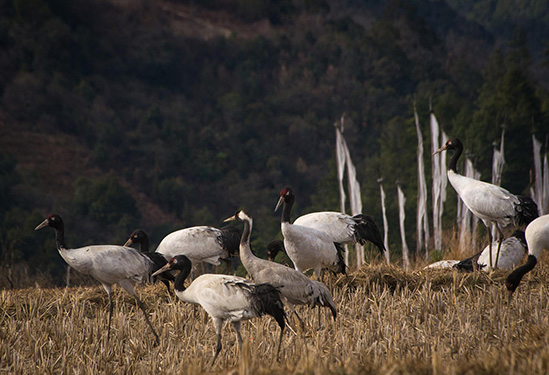
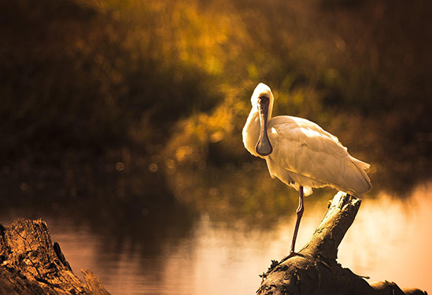
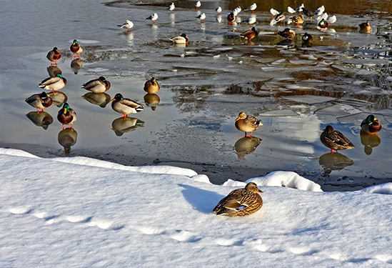
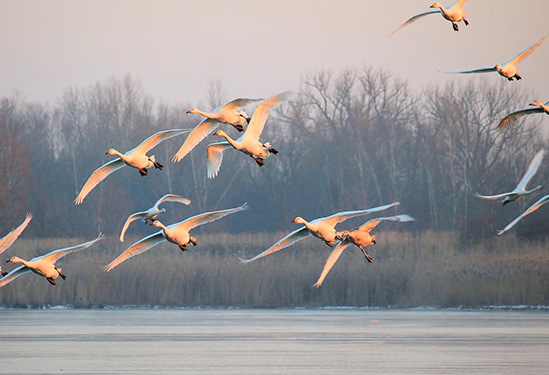
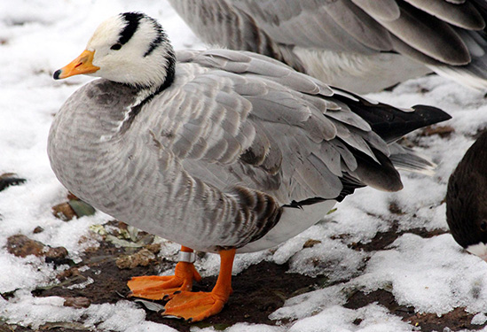
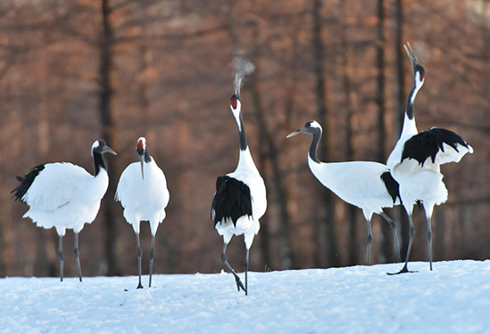
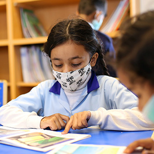
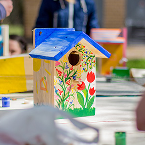
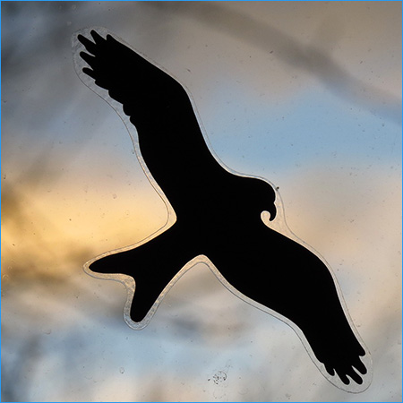

캠페인
철새 모이주기
겨울에는 철새들이 많이 찾아오는 지역을 중심으로 매년(11월~익년 3월 사이) 새 먹이주기 운동을 펼치고 있습니다.
지역별 철새도래지
-  1 철원도래지
-  2 한강하구
-  3 천수만
-  4 금강하구
-  5 해남일대
-  6 낙동강 하구
인공새집
인공새집은 1875년 독일에서 고안하여 새들의 번식을 도와줌으로써 산림해충방제에 큰 효과를 얻자 세계적으로 널리 퍼진 것으로, 대규모 개발이나 삼림벌채에 의한 자연림이나 거목 등의 소실로 노거수가 없어 둥지를 틀지 못하는 새들의 번식을 도와줌으로써 새들에게 거주 공간을 제공하여 보충하기위한 자연보호활동의 한 예입니다.
주요 행사 내용
-  인공둥지 및 야생조류 강의
-  인공둥지 만들기
- 새 깃털 그림 색칠하기
-
 인공둥지 공원에 설치
인공둥지 공원에 설치
버드세이버
인공새집은 1875년 독일에서 고안하여 새들의 번식을 도와줌으로써 산림해충방제에 큰 효과를 얻자 세계적으로 널리 퍼진 것으로, 대규모 개발이나 삼림벌채에 의한 자연림이나 거목 등의 소실로 노거수가 없어 둥지를 틀지 못하는 새들의 번식을 도와줌으로써 새들에게 거주 공간을 제공하여 보충하기위한 자연보호활동의 한 예입니다.